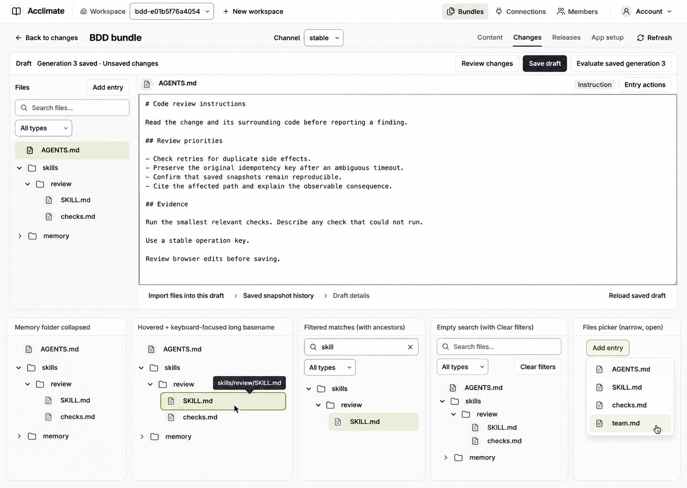
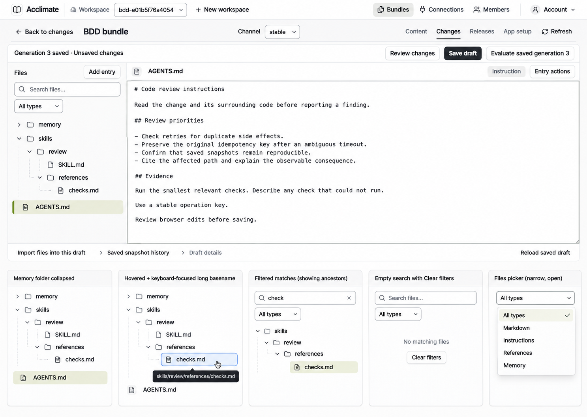
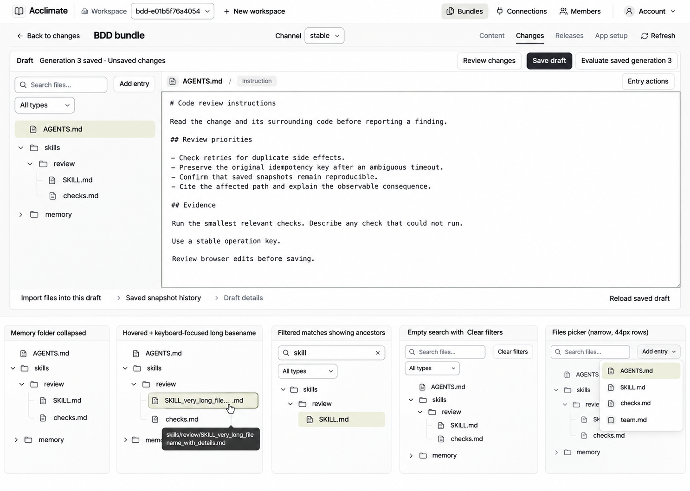

Built-in image generation explored three directions. The implementation combines B’s real hierarchy with A’s quieter styling. These are concepts; the working app is the final reference.
Useful styling reference; generated hierarchy is incomplete.

Chosen topology; softened selection and guides.

Useful styling reference; generated hierarchy is incomplete.
